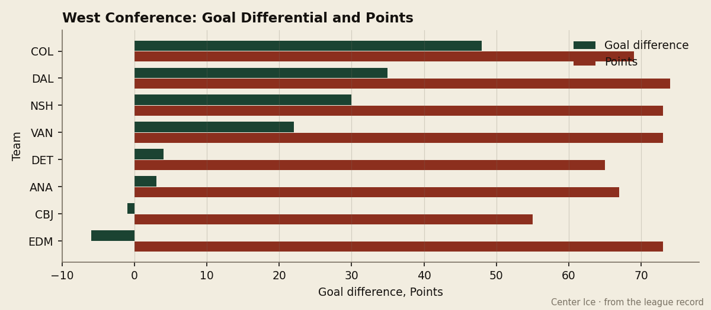
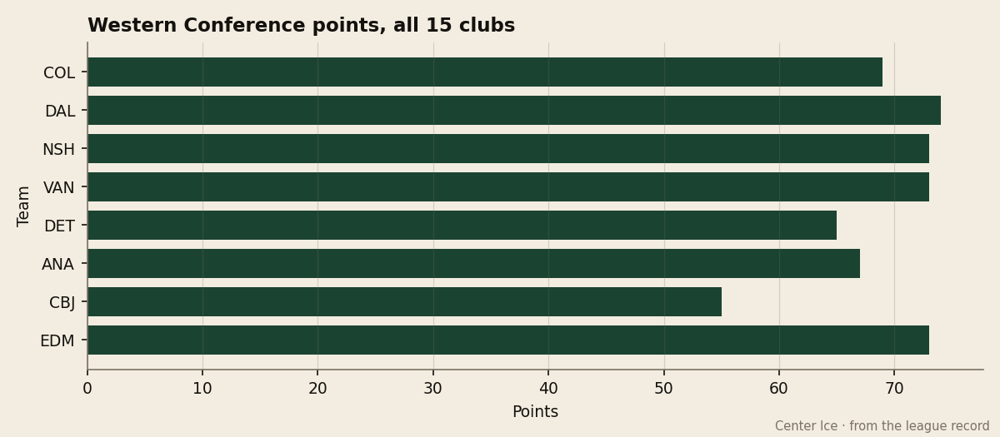

The Overtime Gap: Colorado leads the West in goals scored and goal differential, holds 5th, and the distance to 4th is 11 overtime games
The Avalanche have outscored opponents by 48 goals, the widest margin in the conference. Edmonton is minus-6 and 4 points ahead.
 Howard BlaineSenior writer, The Blaine Rankings · The Hockey Gazette
Howard BlaineSenior writer, The Blaine Rankings · The Hockey Gazette
 Peter Forsberg89 and
Peter Forsberg89 and  Colorado Avalanche have 220 goals scored and a plus-48 goal differential, both the best numbers in the Western Conference. The Avalanche sit 5th in the conference table with 69 points, behind 4 clubs that have worse differentials. The explanation lies elsewhere than injuries, goaltending, or the schedule: Colorado's games end in regulation, and the standings system pays a club to extend them.
Colorado Avalanche have 220 goals scored and a plus-48 goal differential, both the best numbers in the Western Conference. The Avalanche sit 5th in the conference table with 69 points, behind 4 clubs that have worse differentials. The explanation lies elsewhere than injuries, goaltending, or the schedule: Colorado's games end in regulation, and the standings system pays a club to extend them.
Colorado has played 7 games past regulation this season: 4 wins, 3 losses. Edmonton, which holds 73 points with a goal differential of minus-6, has played 18: 11 wins and 7 losses. Those 18 overtime games have earned Edmonton 29 points. Colorado's 7 have earned it 11. The gap between 69 and 73 is 4 points. The gap between the two teams' goal differentials is 54.
The Western Conference table rewards two different skills. One is the ability to win a game inside 60 minutes. The other is the ability to play 65-minute hockey and collect the second point from a loss. Edmonton has the second in abundance. Colorado has the first.

The table below puts the top 5 through a different filter. Colorado's 29 regulation wins are tied with Vancouver for 3rd in the conference, one behind Nashville and two behind Dallas. What separates Colorado from the 4 clubs above it is overtime production.
| Club | GP | Regulation W | OTW | OTL | Overtime games | Points |
|---|---|---|---|---|---|---|
 Dallas Stars Dallas Stars | 56 | 31 | 5 | 2 | 7 | 74 |
 Nashville Predators Nashville Predators | 54 | 30 | 4 | 5 | 9 | 73 |
 Vancouver Canucks Vancouver Canucks | 56 | 29 | 5 | 5 | 10 | 73 |
 Edmonton Oilers Edmonton Oilers | 56 | 22 | 11 | 7 | 18 | 73 |
| Colorado Avalanche | 54 | 29 | 4 | 3 | 7 | 69 |
Edmonton has scored 197 goals and allowed 203, a differential of minus-6. It has 22 regulation wins, the fewest of any club in the top 5. It has 73 points. Colorado has scored 220 and allowed 172, a differential of plus-48. It has 29 regulation wins, 7 more than Edmonton. It has 69 points. The standings reward the Oilers' 7 additional overtime games by more than they reward Colorado's 54-goal swing in goal differential.
The goaltending explains part of why Colorado's games end in regulation.  Jamie Storr78 is graded 78 in the Book, the lowest of any goaltender with 40-plus games this season, and carries a .861 save percentage with 1 shutout in 44 starts. A goaltender who cannot steal a close game produces fewer overtime opportunities. Colorado's defence in front of him has allowed 3.19 goals per game, the 4th-fewest in the West, but on nights when the margin is one goal, the Book has Storr below the men who give their clubs a second-period lead to protect.
Jamie Storr78 is graded 78 in the Book, the lowest of any goaltender with 40-plus games this season, and carries a .861 save percentage with 1 shutout in 44 starts. A goaltender who cannot steal a close game produces fewer overtime opportunities. Colorado's defence in front of him has allowed 3.19 goals per game, the 4th-fewest in the West, but on nights when the margin is one goal, the Book has Storr below the men who give their clubs a second-period lead to protect.

On the business side, Colorado has a $71.56M payroll, 3rd in the league behind Detroit and New York. At 69 points, the per-point cost is $1.04M, the 4th-worst rate in the league. The club made $19.56M in profit, drew 16,727 a night, and charged $80 a ticket. Last spring the Avalanche went 24 games deep in the playoffs, more than any other club, and lost in the final. The structure that produced that run, an offense that could win the fourth period of a Game 7, is the same one that has them finishing games inside regulation in the regular season.
What the schedule says
Colorado has 28 games left. The Avalanche trail Vancouver, Edmonton and Nashville by 4 points, and all three of those clubs have played more games than Colorado. At the current pace of 1.278 points per game, Colorado projects to 104.8 over 82. Nashville at its pace of 1.352 projects to 110.9. Edmonton at 1.304 projects to 106.9. The pace gap is real, but Colorado has 28 games to close it, and the teams above it must hold their rates against a schedule that includes 6 division meetings with Vancouver and Edmonton still to come.
In division play, Colorado is 11-1-1-4 through 17 games, including a 4-0-1 mark against Calgary, a 3-1-0 record against Minnesota and a 3-1-0 record against Vancouver. The 1 meeting remaining against Edmonton and the 1 against Minnesota close out the division calendar. Outside the division, Colorado plays Dallas twice, Anaheim twice, Los Angeles twice, San Jose twice, and makes 9 trips to the Central and Eastern divisions.
The final word belongs to Peter Forsberg, who has 94 points in 54 games and paces at 143 over 82, and to  Milan Hejduk83, whose 91 points on 52 assists show the construction: a player who creates and a player who finishes. No other club in the West has two players at those numbers on the same roster. Do 220 goals scored in regulation outweigh a roster that manufactures 18 overtime nights? The system says no.
Milan Hejduk83, whose 91 points on 52 assists show the construction: a player who creates and a player who finishes. No other club in the West has two players at those numbers on the same roster. Do 220 goals scored in regulation outweigh a roster that manufactures 18 overtime nights? The system says no.